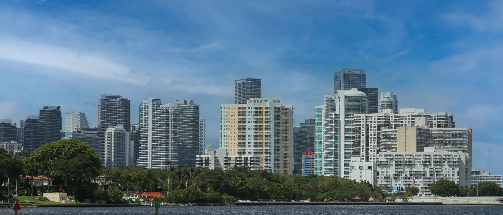

Silvestri International — Studio Legale Internazionale
Fondato nel gennaio 2019, con sedi a Miami, Roma e Montevideo. Il nostro lavoro è preciso e utile: far funzionare correttamente un investimento, una società o una questione di famiglia in due ordinamenti nello stesso momento.
Cosa facciamo
01
Teniamo gli investitori italiani in regola con il fisco italiano e con il diritto internazionale mentre operano all'estero — prima che il rischio esista, non dopo l'arrivo di un avviso.
02
Una gamma completa di servizi societari per le realtà che operano in Florida — costituzione, gestione, operatività quotidiana — in conformità con la legge italiana dove si applica.
03
Consulenza legale e fiscale a persone e società italo-americane in diritto commerciale, societario e civile italiano — incluse questioni di famiglia e successorie — e proprietà intellettuale.
Missione
La nostra missione è fare da ponte tra due giurisdizioni: rendere più semplice lo scambio di investimenti e seguire l'intero processo per persone e aziende straniere che vogliono entrare nel mercato americano o in quello italiano con un passo solido e ben organizzato — nel pieno rispetto di entrambi i sistemi.
Collaborazioni consolidate con studi e professionisti di primo piano in ogni ambito legale e fiscale, negli Stati Uniti e in Italia, ci permettono di guidare i clienti nell'incertezza di una giurisdizione straniera con un percorso costruito sui loro obiettivi reali — non su un modello.

Tappe
2011
Lorenzo Silvestri si trasferisce negli Stati Uniti per aprire l'ufficio di Miami di un prestigioso studio legale italiano, che dirige fino al 2018.
2016
Certificato dal Florida Bar come Foreign Legal Consultant in diritto italiano — dopo la nomina a Notary Public della Florida nel 2014.
2019
Nasce Silvestri International – Studio Legale Internazionale, con uffici a Roma, Miami Beach e Miami Brickell.
2020
Lo studio apre un ufficio strategico nel Brickell 21 Financial Centre, nel cuore del distretto finanziario di Miami.
Oggi
Miami, Roma e Montevideo. Come partner di Coen Palandri Silvestri, uno studio internazionale a servizio completo per qualsiasi questione legale o fiscale in Italia e, sul diritto italiano, in Florida.
L'intera pratica italiana: societario, civile, famiglia, successioni, proprietà intellettuale, e un dipartimento fiscale e contabile dedicato.
Società Fiduciaria e di Revisione — mandati fiduciari statici, trust, costituzione e gestione di società italiane.
Avvocati abilitati in Florida per contenzioso e immigrazione, e CPA, developer e broker selezionati.
Socio sostenitore a Miami dal 2013.